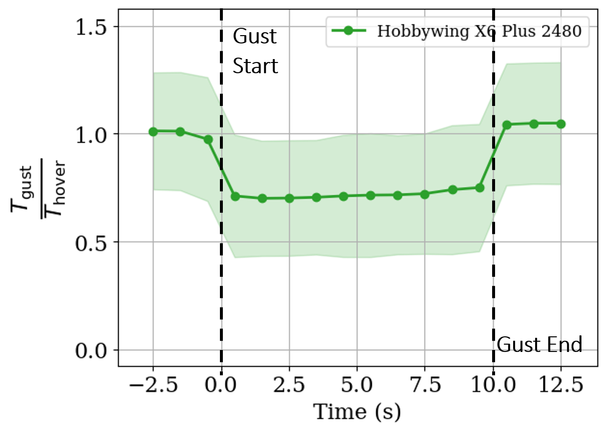
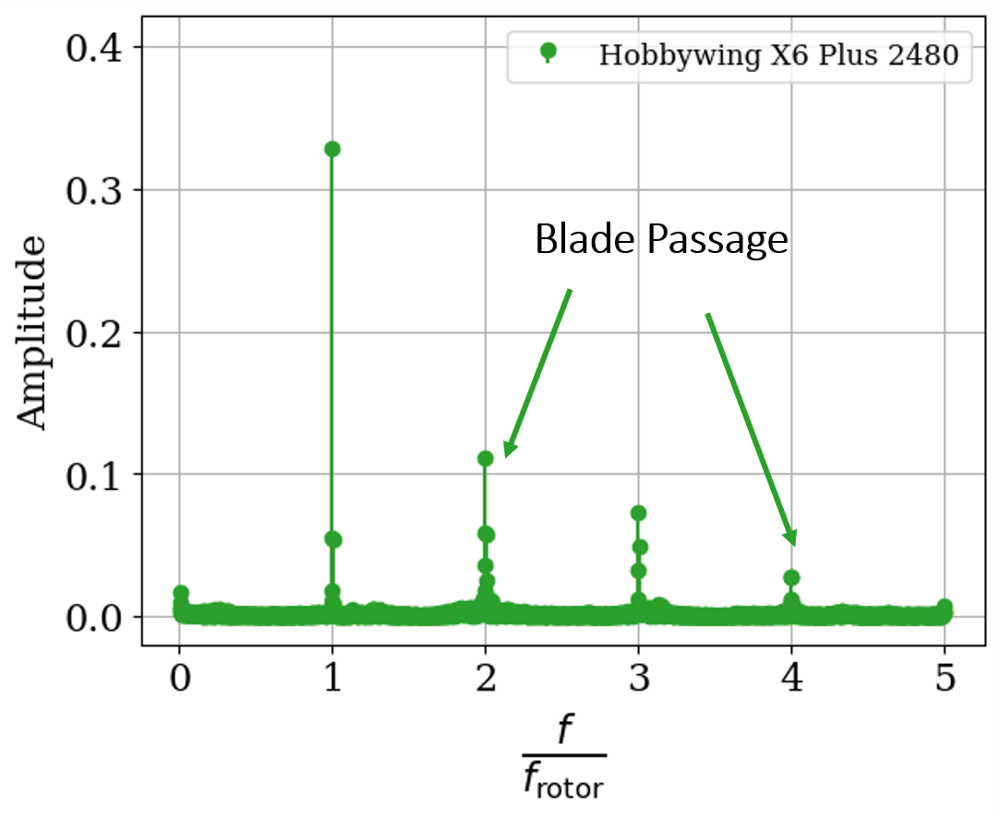
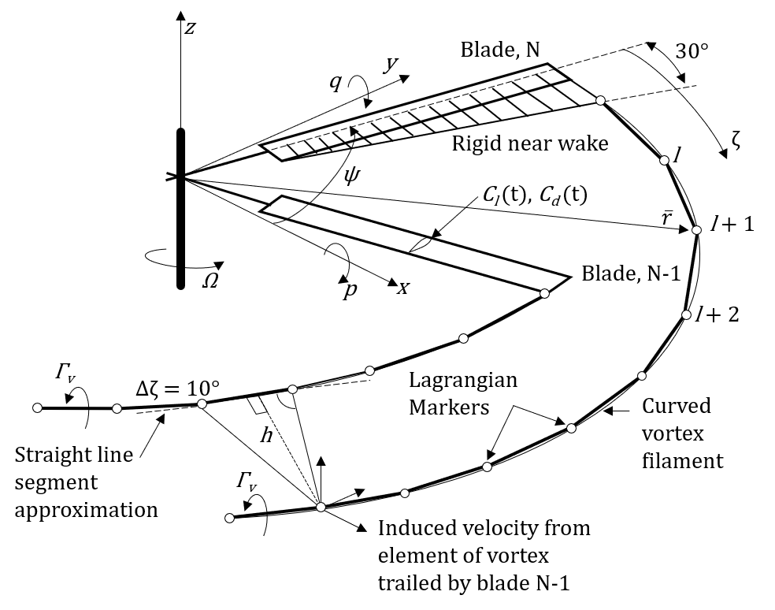
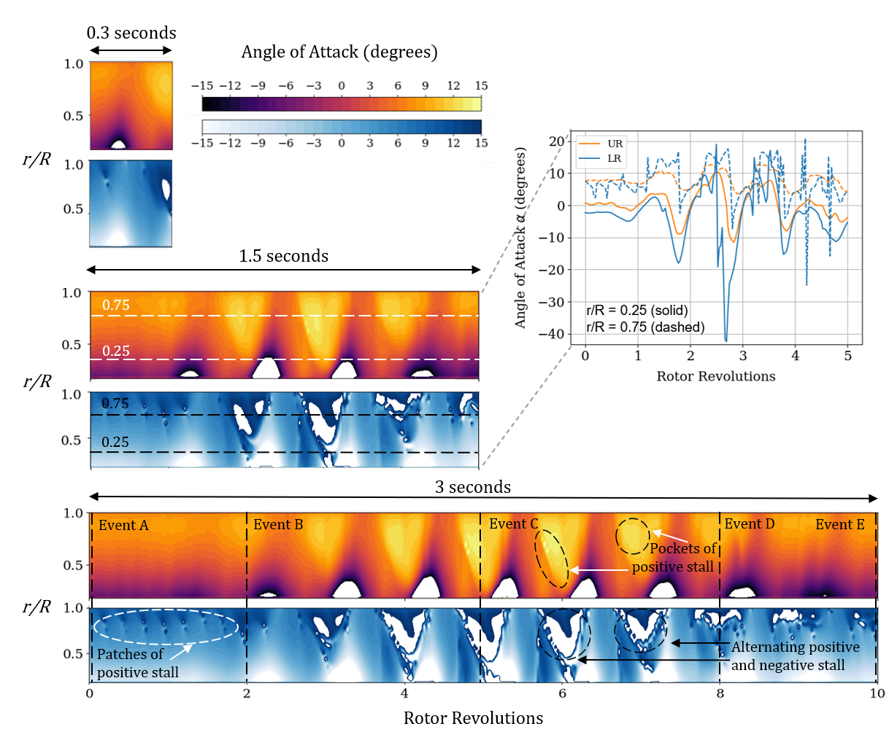

About
I am a doctoral candidate in Aerospace Engineering at Indian Institute of Technology Madras. My thesis focuses on the numerical and experimental investigations of gust effects on multi-rotor systems. My areas of research include rotorcraft design and aerodynamics, unsteady flow behaviour, gust interactions, high-performance computing, and neural networks for aerospace applications. I am particularly interested in extending these methodologies and approaches to a broader range of inter-disciplinary probems in aerospace, including aero-structural and fluid-thermal systems.
Research Overview
My doctoral research investigates the aerodynamic response of rotor systems subjected to controlled unsteady gust environments. The work primarily involves the development and validation of a mid-fidelity free-vortex wake method (FVM) model, alongisde the design and implenentation of a compact fan-array wind generator for complementary numerical and experimental investigations.
Numerically, the research studies the rotor loads and moments, sectional aerodynamic properties including angle of attack and induced inflow, and rotor-wake interactions under gust conditions. Experimentally, the generated gust field is characterised, followed by statistical analysis of rotor loads and moments under real-time gust conditions.
Key components of this research include:
- Development and validation of a FVM framework for multi-rotor simulations
- Design, implementation, and characterisation of a compact fan-array gust generator
- Complementary numerical and experimental investigations of rotor performance characteristics under discrete and continuous gust conditions
- CPU and GPU-accelerated computational workflows for large-scale parametric investigations
Fan-array Wind Generator and Rotor Test Rig
A compact fan-array-based open-channel wind generation facility was developed to produce controlled gust environments for aerodynamic testing. A rotor test rig was also designed and fabricated to measure aerodynamic loads and moments for validation and rotor-gust interaction studies.

Figure: Schematic of the fan-array wind generator and the associated components.

Figure: Schematic of the rotor test rig and the associated components.
Flow field Characterisation
Velocity measurements were conducted across multiple downstream planes to characterise the spatial structure of the experimentally generated gust field. Structured measurement grids were used to evaluate the statistical properties of the flow field throughout the test domain.

Figure: Measurement locations across downstream planes used for gust-array flow field characterisation.
Representative evolution of turbulence intensity
The generated gust field was evaluated using classical turbulence metrics such as mean velocity, and turbulence intensity (TI). The probability distribution of the velocity was also studied at every measurement location to assess flow stationarity.

Figure: Turbulence intensity contours across multiple downstream planes showing spatial development of the generated gust flow field.
Rotor Load Response
Rotor load response under unsteady gust conditions was evaluated through time-domain and frequency-domain analysis. Dominant response characteristics were identified based on the harmonics present in the rotor thrust data under controlled gust excitation.

Figure: Representative rotor load time-history under uniform, axial gust for isolated UAV rotor in hover.

Figure: Corresponding frequency spectrum showing dominant frequency response characteristics.
Free-Vortex Wake Model
A mid-fidelity free-vortex wake method (FVM) framework was developed to simulate unsteady aerodynamic behaviour of multi-rotor systems. The model represents rotor blades using lifting-line theory and discretizes the wake into vortex filaments to capture the induced flow and rotor wake evolution.

Figure: Blade environment and vortex filament discretisation used in the free-vortex wake method model.
Sectional Aerodynamic Response in Coaxial Configuration
Rotor sectional aerodynamic properties were evaluated for various combinations of gust amplitudes and frequencies. The spanwise variation of blade angle of attack provides insight into rotor–wake interaction and local flow dynamics in multi-rotor configurations.

Figure: Representative variation of sectional angle of attack in a coaxial rotor system for a 10-second axial sinusoidal gust.
Quad-Rotor Gust Response
The developed numerical framework enables simulation of wake interactions in multi-rotor UAV-scale systems. Results for a quad-rotor configuration demonstrate complicated rotor-wake interactions and corresponding peaks in thrust response indicating the influence of highly-unsteady flow patterns.

Figure: Quad-rotor wake structure and the corresponding thrust response for starboard side of the system under sinusoidal edgewise gust.
Journal Articles
-
Pastay, A., Narayanan, S., and Govindarajan, B.,
"Aerodynamic Evaluation of Wind Speed Sensor Placement on UAVs for Meteorological Applications,"
EGUsphere, 2026.
DOI: 10.5194/egusphere-2026-977 -
Narayanan, S., and Govindarajan, B.,
"Effects of gust on the aerodynamics of multi-rotors,"
Physics of Fluids, 2024 — Editor’s Pick.
DOI: 10.1063/5.0243421
Conference Papers
-
Narayanan, S., Shalu, H., Sridharan, A., and Govindarajan, B.,
"Rotor Inflow Prediction Using Free-Vortex Methods and Neural Networks,"
Proceedings of the 11th Asian–Australian Rotorcraft Forum,
Chennai, India, 2025.
ResearchGate Link -
Roshni, E., Narayanan, S., and Govindarajan, B.,
"Experimental Investigations on the Aerodynamic Effects of Axial Gust on Prop-Rotors,"
Proceedings of the 11th Asian–Australian Rotorcraft Forum,
Chennai, India, 2025.
ResearchGate Link -
Narayanan, S., Chandel, A., and Govindarajan, B.,
"Effect of Gust on Coaxial Rotors using Free Vortex Methods,"
Proceedings of the Vertical Flight Society 80th Annual Forum,
Montreal, Canada, 2024.
DOI: 10.4050/F-0080-2024-1262